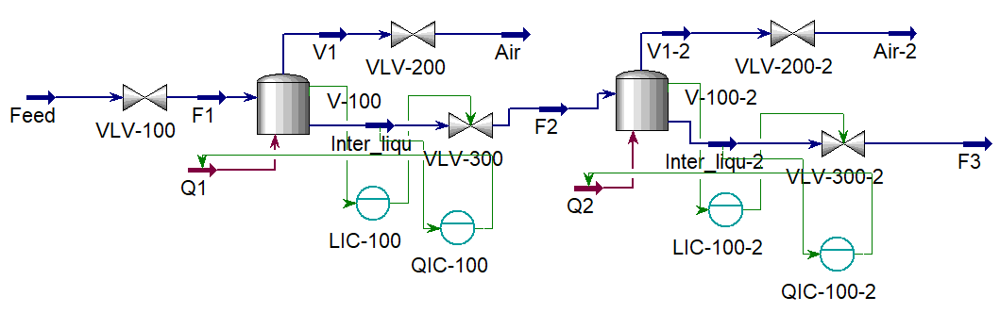
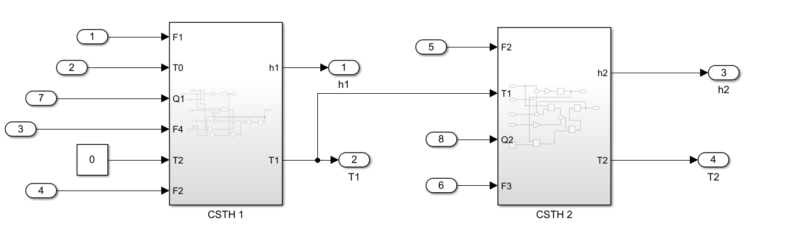
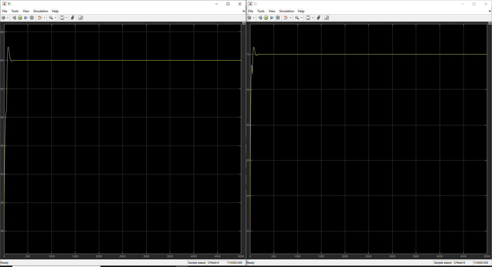
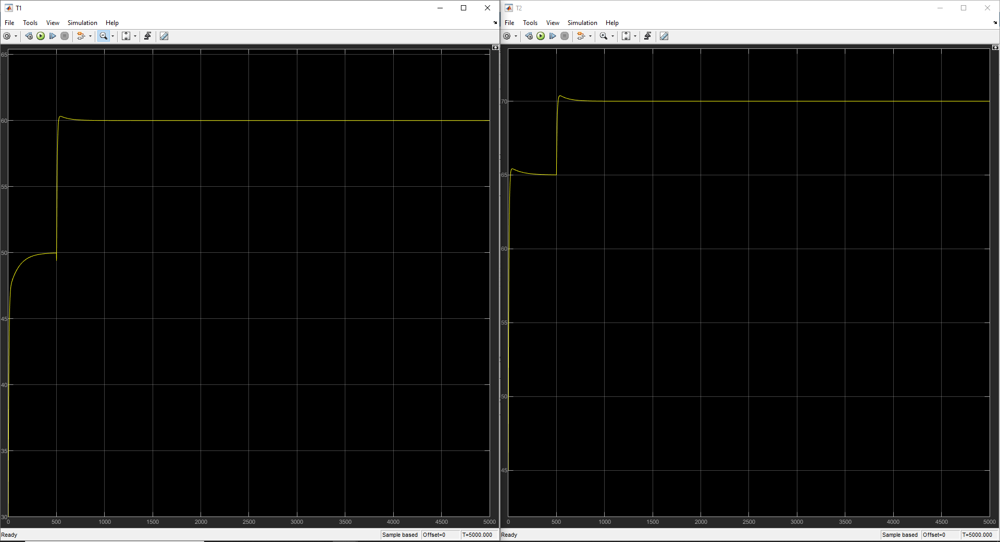
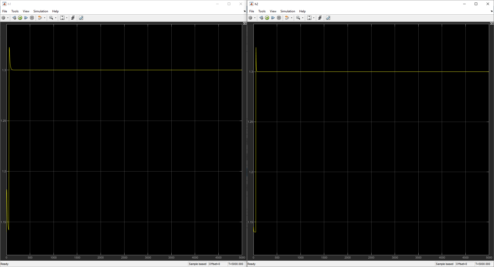
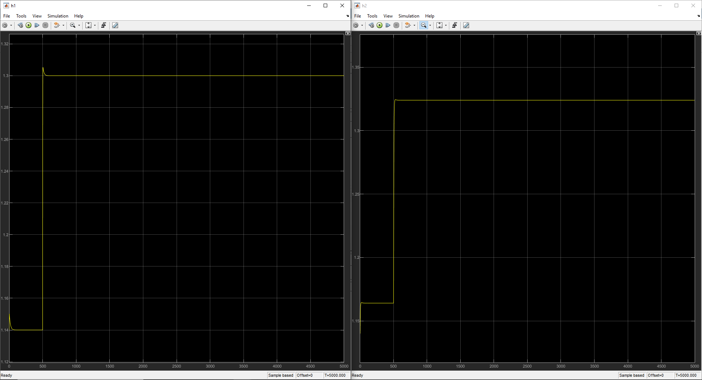
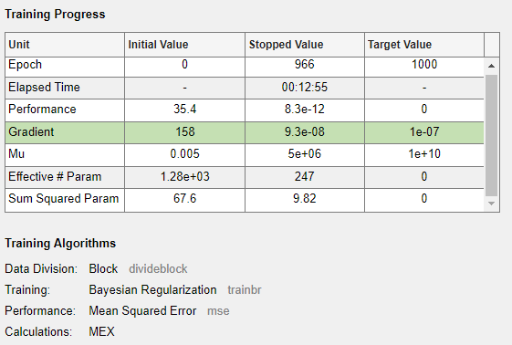
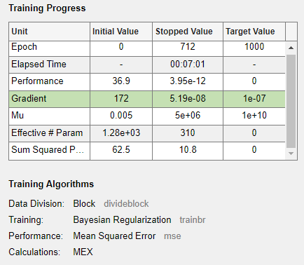

01 Introduction & Problem Statement
Continuous Stirred Tank Heaters in series (2-CSTH) are widely used in petrochemical and pharmaceutical industries for staged thermal processing. Their serial architecture introduces severe non-linear hydraulic interactions, transport time delays, and MIMO thermal coupling between tanks.
Conventional fixed-gain PID controllers fail under dynamic transitions: T₂ peaks at 80.88°C for a 75°C setpoint (7.84% overshoot) with a 64-second settling time — causing heater filament fatigue and product degradation in heat-sensitive processes.
This research bridges first-principles thermodynamic modeling with Industry 4.0 Digital Twin technology, deploying ML surrogates (RF, XGBoost, NARX-ANN) to overcome the limitations of classical control and enable real-time virtual sensing.
02 Research Objectives
- O1 Derive dynamic non-linear mass & energy balance ODEs for the interacting dual-tank system featuring a 20% hydraulic recycle loop.
- O2 Cross-validate steady-state operating points across Aspen HYSYS V14 (ASME Steam package) and MATLAB/Simulink R2023b.
- O3 Design and benchmark multi-loop PID vs. IMC strategies for simultaneous level (h₁, h₂) and temperature (T₁, T₂) regulation.
- O4 Train and evaluate RF, XGBoost & NARX-ANN Digital Twin state estimators; assess accuracy via R², RMSE, and MAE metrics.
03 Mathematical Modeling & Governing Equations
04 System Architecture & Process Diagrams


05 Methodology Pipeline
06 Dynamic Control Results & Performance
| Controller | Overshoot | Rise ($t_r$) | Settling ($t_s$) |
|---|---|---|---|
| PID | +4.6% (~1.36 m) | ~5 s | ~50 s |
| ANN_PID | +3.0% (~1.34 m) | ~3 s | ~40 s |
| IMC | +1.5% (~1.32 m) | ~2 s | ~25 s |
| ANN_IMC ✓ | +0.7% (~1.31 m) | ~2 s | ~15 s |
| Controller | Overshoot | Settling ($t_s$) | Final Offset |
|---|---|---|---|
| PID | ~1.33 m | ~15 s | +0.02 m |
| ANN_PID ✓ | ~1.31 m | ~20 s | 0.00 m (Perfect) |
| IMC | None | ~25 s | +0.02 m offset |
| ANN_IMC | None | ~15 s | +0.02 m offset |
| Controller | Overshoot | Rise ($t_r$) | Settling ($t_s$) |
|---|---|---|---|
| PID | +5.0% (~63.0°C) | ~25 s | ~120 s |
| ANN_PID | +6.6% (~64.0°C) | ~15 s | ~90 s |
| IMC | None (0%) | ~60 s | ~150 s |
| ANN_IMC ✓ | +1.6% (~61.0°C) | ~10 s | ~60 s |
| Controller | Overshoot | Rise ($t_r$) | Settling ($t_s$) |
|---|---|---|---|
| PID | +6.6% (~80.0°C) | ~15 s | ~110 s |
| ANN_PID | +4.0% (~78.0°C) | ~10 s | ~90 s |
| IMC | None (0%) | ~30 s | ~100 s |
| ANN_IMC ✓ | +1.3% (~76.0°C) | ~15 s | ~70 s |




07 Machine Learning Digital Twin Performance


| ML Model | R² (Temp) | R² (Level) | Key Finding |
|---|---|---|---|
| Random Forest ✓ | > 0.9999 | > 0.9999 | Best: bagging → robust to outliers |
| XGBoost ✓ | > 0.9999 | > 0.9999 | Equivalent accuracy, faster inference |
| NARX Neural Network | ~0.990 | Good | Phase-lead ~270 s under IMC closed-loop |

